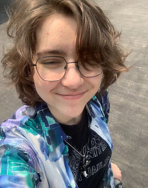
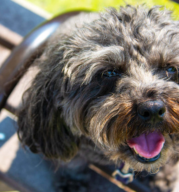

Taro Routly


- Student Number
- 041126214
- Program
- Interactive Media Design
- Course
- MTM6201 - Web Development II
- Fact About Me!
- I have a dog named Finnegan Oliver Routly aka Finn, who is 8 years old on Jan. 15th, but still acts like a puppy. (Picture included above.)